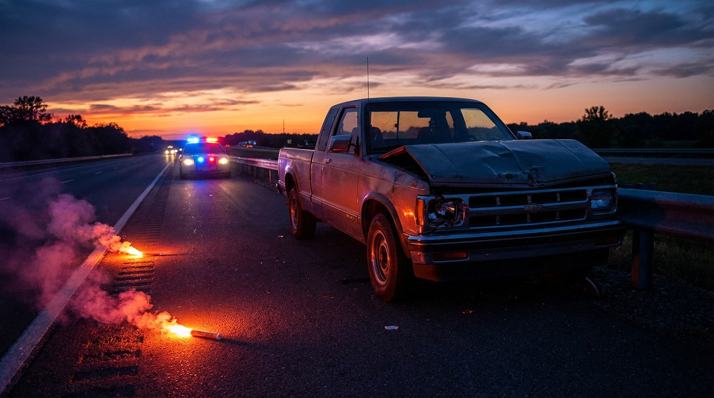

The Chevy S-10 Was 6× Deadlier Than a Tacoma. Then GM Fixed It.
Let’s talk about what happens in the first 150 milliseconds when a compact pickup hits a median barrier at highway speed. In a Toyota Tacoma, the frame rails crumple in sequence, the airbags deploy, and you walk away complaining about your insurance premium. In a Chevrolet S-10, the frame folds like a lawn chair and the steering column rearranges your anatomy. 1,427 people died in S-10s during the FARS study period, at a rate of 4.83 deaths per 100 million vehicle miles traveled.
To appreciate how catastrophic that number is, line it up against every other compact pickup in the dataset. The Tacoma: 0.80. The Nissan Frontier: 1.45. The Dodge Dakota: 2.62. The Ford Ranger: 2.91. Even the Ranger — not exactly a vehicle safety advocates name-drop at dinner parties — was 40% safer per mile than the S-10. GM’s little truck wasn’t just the worst in class. It was the worst by a factor that suggests a fundamentally different engineering philosophy, one where “compact” meant “we removed the parts that keep you alive.”
Model year 2000 was the peak of the carnage: 178 deaths in a single year. The 1998–2003 stretch averaged 135 deaths per model year. The S-10 sat on GM’s aging S-body platform — originally designed in the early 1980s and never meaningfully updated for modern crash standards. No electronic stability control. Minimal side-impact protection. A cab that crumpled before the frame did.
But here’s the redemption arc nobody talks about: GM replaced the S-10 with the Chevrolet Colorado in 2004, and the Colorado’s death rate is 0.28 per 100M VMT. That’s a 17-fold improvement in a single model replacement. It might be the single largest safety leap in any vehicle nameplate transition in FARS history. Same market segment, same brand, same dealer network — just better engineering. The S-10’s impairment rate was 20.5%, perfectly average for pickups, confirming this was never a behavior story. It was a design story, and GM eventually wrote a better ending.
The uncomfortable question: how many of those 1,427 deaths happened because GM kept selling a 1980s platform into the 2000s instead of investing in a replacement sooner?